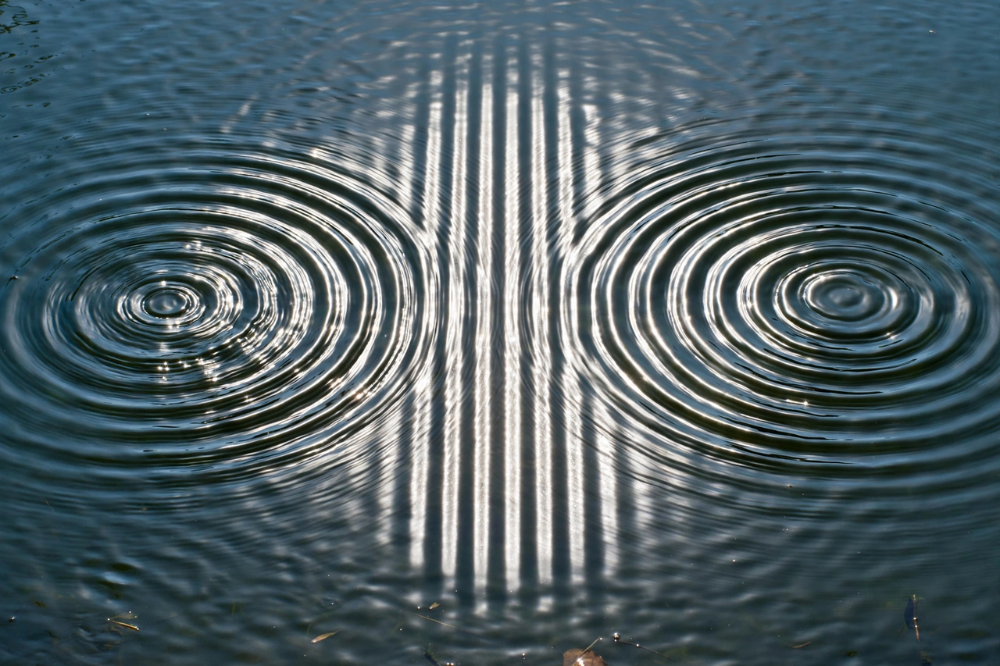

Interference (wave propagation)

In physics, interference is a phenomenon in which two coherent waves combine by adding their amplitudes, forming a resultant wave of greater, lower, or the same amplitude. When the waves arrive in phase, their amplitudes add (constructive interference); when they arrive out of phase, they partially or wholly cancel (destructive interference). Interference effects can be observed with all types of waves, including light, sound, water waves, and matter waves.
| Principle | Superposition of coherent waves |
|---|---|
| Types | Constructive; destructive |
| Classic experiment | Young's double-slit experiment (1801) |
Principle of superposition
Interference follows from the superposition principle: the displacement at any point equals the sum of the displacements of the individual waves. A stable interference pattern requires the waves to be coherent — to maintain a constant phase relationship — which is why interference experiments with light typically derive both beams from a single source, as in Thomas Young's double-slit experiment of 1801, which demonstrated the wave nature of light. The double-slit pattern also appears when electrons or other particles are used, a phenomenon central to quantum mechanics and to the observer effect.
Applications
Interference underlies a wide range of technologies and measurements. Optical interferometers, from the Michelson interferometer (whose null result in the Michelson–Morley experiment helped undermine the luminiferous aether) to the kilometre-scale arms of LIGO used to detect gravitational waves, measure minute changes in optical path length. Thin-film interference produces the colours of soap bubbles and oil slicks and is exploited in anti-reflective coatings; diffraction gratings separate light into spectra by multi-beam interference; and radio interferometry combines signals from separated antennas to synthesise high-resolution telescopes. Noise-cancelling headphones use destructive interference of sound.
Beats
Two waves of slightly different frequencies produce beats: a periodic alternation of constructive and destructive interference, heard as a pulsing tone. Musicians use beats to tune instruments to one another.